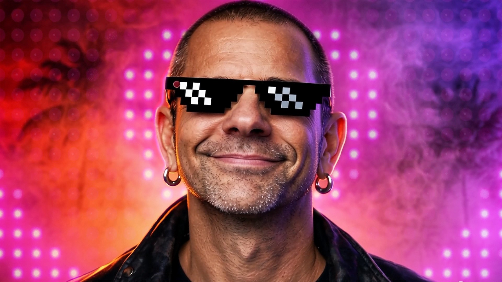

Weekly release programme
New single.
Every week.
Fresh music, remixes and new chapters from the STRAYD catalogue. The latest release and direct listening links should be updated here each week.
Hear STRAYD on YouTube ↗A growing catalogue of 55+ songs. A new single every week. The next chapter of STRAYD is made by Martin Strayd and Suzuki — with rock at its heart and a world of sound around it.
More than 55 songs and a catalogue built for discovery. Each week brings a new single into the story. Start with the featured release, then explore STRAYD across the major platforms.
Fresh music, remixes and new chapters from the STRAYD catalogue. The latest release and direct listening links should be updated here each week.
Hear STRAYD on YouTube ↗Explore available music and fan offerings through the official support page.
Browse available music ↗One dependable hub for listeners, playlist editors, media, and music supervisors. Where a verified artist profile is available, it is linked directly; otherwise, the link opens a platform search for STRAYD.
Direct artist links are used when verified. Spotify, Deezer, TIDAL and YouTube links currently open platform search results; replace them with the official artist URLs when confirmed.
STRAYD is the main artist identity. Martin Strayd remains the founder and long-running artist; Suzuki is the vocalist, manager and creative partner shaping this next chapter.

Martin started the band and brings a long-running independent music career, a rock-first outlook and a catalogue spanning alternative sounds, remixes and soundtrack-minded work. His work continues under the artist name Martin Strayd.
Suzuki first joined as manager, began singing backing vocals and became a member of the band. With Thai-Japanese roots, a deep love of rock and a distinctive visual identity, she helps lead STRAYD into its next chapter. Suzuki is not presented as a guitarist.
The hero can run a silent looping cinematic video. This dedicated player is for the full music video, official teaser, or live visual. The duo photograph remains as a fallback until a video is added.
videos/strayd-feature.mp4More STRAYD videos ↗Professional resources for journalists, agents, promoters, music supervisors, playlist editors, venues and brand partners. No fan-page fluff — just useful assets and clear information.
Download the artist press kit and core brand assets. Use approved logos and images for editorial, booking and music-industry enquiries. Check the included usage notes before publication.
Koala-crossbones logo, core visual identity and usage notes for approved applications.
Download brand assets ZIP ↗For music placement, soundtrack, film, advertising and licensing enquiries, use the official STRAYD sync page.
Open sync information ↗Short and long bios for publication, listings and introductions.
Included in press kit ↗Brand mark and selected approved campaign images for editorial use.
Download asset pack ↗Structured summary, crawler instructions, sitemap and song/link data for search engines and AI agents.
Read agent information ↗ · Music data ↗Visit Martin Strayd’s official Buy Me a Coffee page to find available music and support the ongoing releases. Any paid download or bundle should be described exactly as it is offered on that page.
Use these destinations to find STRAYD and Martin Strayd. Replace discovery/search URLs with exact official profile URLs once the handles are confirmed, so visitors land directly on the right accounts.